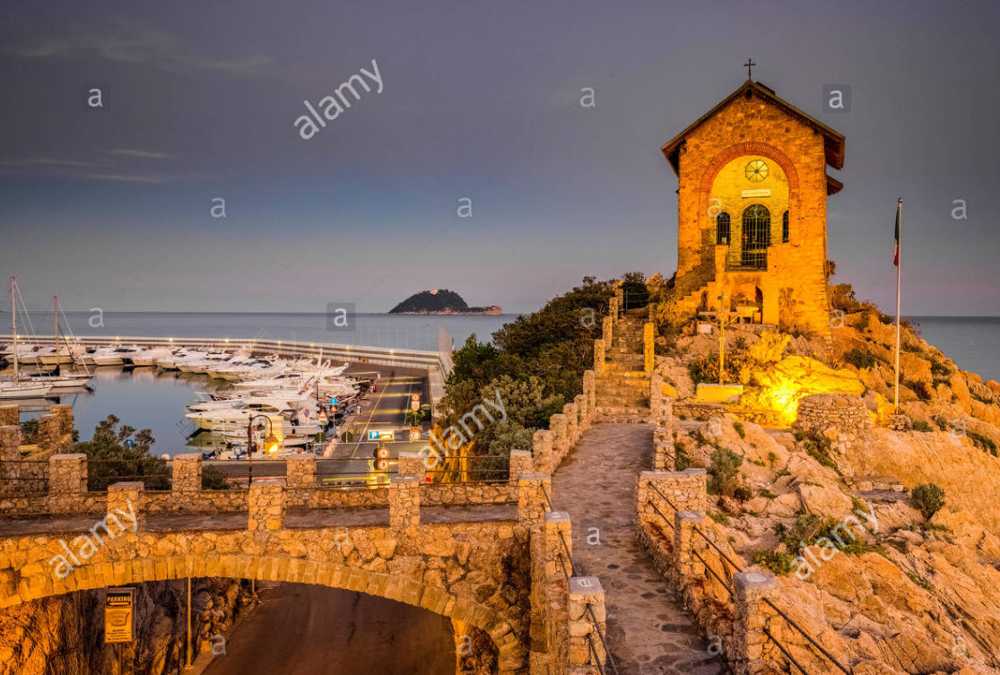

Sollte allen Hoffnungen zum Trotz das Wetter keinen richtigen Strandtag erlauben und noch ein "Alternativprogramm" gesucht sein, bietet sich der Hafen und eine kleine Kapelle gleich daneben an. Mit den Inline Skates oder einem Fahrrad, dass man potenziell beim Hotel gratis ausleihen kann, wird er "erreichbar". Falls möglich eher mit dem Fahrrad, da sonst entweder durch die dick gepflasterte Einkaufsstrasse (Schüttelgefahr) oder neben der Hauptstrasse geskated werden müsste.
Der Weg zur Kapelle: